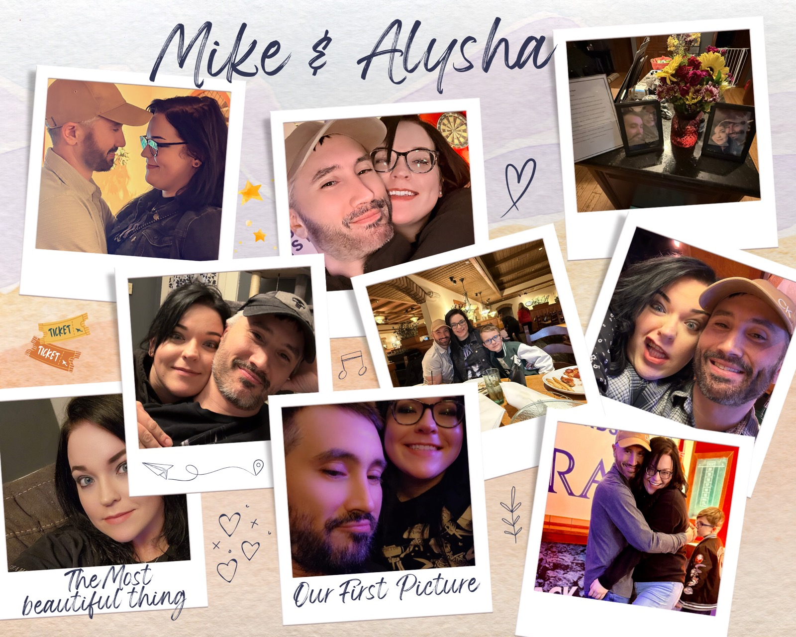

🖤 Our Digital Love Journal
In loving memory of Alysha 🕊️
I could've written this in ink — could've folded my heart into pages and handed it to you like a story. But I'm not just the guy who fixes things or builds websites. I'm yours. And this... this is my love written in code, shaped in shadows, and left here like an altar. Each line, each flicker, each word is a quiet confession: I feel everything when it comes to you.
I built this for you while you were here. Now I keep building it because you're everywhere. Every entry, every photo, every line of code I add is me refusing to let the story stop. This is where I keep you.

✨ Her
Alysha
This page is hers. Write about who she was — the way she laughed, the things she loved, what she taught you, the little details nobody else knew.
Her favorite things. Her music. The way she showed up for the people she loved. The things you'll carry with you.
💜 Reasons I Love You
📖 The Journal
Two voices, one story.
🌙 Gallery
What we looked like.
🎥 Messages
Things I still need to tell you.
🎵 A Song For You
Made with everything I have.
For you, always.
✍️ Write
The journal is always open.
The writing desk isn't connected yet.